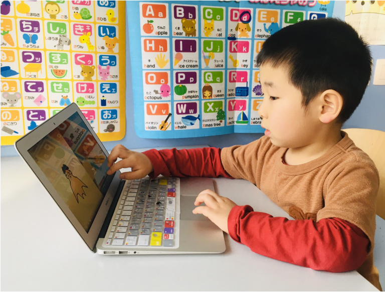

Revisiting children's digital habits
Exploring app/internet usage and and how it affects academic performance
-
Amy-Caroline Downing
-
Eren Janberk Genç
-
Ruiqi Wang
-
Mariko Matsuzaki
Why is this topic “digital habits of children” so important for parents?
In a society where usage of digital applications and other technology is increasing quickly, knowing how that usage impacts academic success is critical for the future of the next generation and a question often asked by parents.
It is interesting to note that although the media constantly criticize and are skeptical about children’s usage of digital devices, the usage continues to increase and in fact, many parents provide digital devices to their children for their reasons and hopes for positive impact. Thus, children’s digital device usage continues to increase.1
Here are some key reasons2 that parents let their children use digital devices: to keep children entertained so parents can get some break, to obtain convenient means to communicate with children, to allow children contact with their friends, but also, hoping for the educational impact.
Knowing the impact technology might have on our young people is especially important since it is increasingly present in children’s lives and they are using it for various activities that may or may not have a positive impact. For example, only 20%3 of mobile device usage is for educational purposes, regardless of the fact parents often give their child access to the mobile phone for that purpose. They are mainly being used to play games and watch tv (McConomy, 2019).
How can we explore the impact of children's digital habits?
To give more insight on this question, we dive into the PISA academic performance dataset. PISA4 (Programme for International Student Assessment) is designed by OECD to measure 15 year olds’ skills in Math, Science and Reading. As PISA test students around the world at regular intervals and include a large number of countries, we use this dataset as our point of measure for academic success and we compare the results with Google and Apple app store downloads, app usage data published by Statista, as well as another OECD dataset with data on how much time children spend on the internet.
We will start our analysis by looking at the association between academic performance and app usage since a large portion of internet usage is through apps/mobile phones and can be accessed anywhere or anytime someone has a data connection. Applications are also very common for young people to use in their daily life. For these reasons, we have used the data of app usage as pseudo of the tendency and activities that people engage in for mobile phone usage.
Once we have determined if there is a significant correlation there, we will take a step back and we will further explore this topic of children’s digital habit from wider scope, also by investigating the usage of the internet in general as well as different types of internet activity and how this correlates to academic success.
After our analysis, we hope that parents everywhere will obtain data driven insights and be a bit more at ease, and become able to have neutral perception towards the general criticism in regards to childrens’ digital habits based on real data.
General overview of our data
To grasp what kind of data we’ll be analyzing, let’s first take a general look to understand the type of unique information our datasets present before we look at trends and correlations between them.
We’ll first look at mobile application downloads which are presented with line charts and treemaps.
Mobile apps have been steadily proliferating over the years
Number of applications released per year in Apple Store between 2010 - 2020
Number of applications released per year in Google Play Store between 2010 - 2020
Games take the cake with the most downloads in both Apple Store and Google Play Store, with educational apps following closely behind
The distribution of applications per category in Apple Store
The distribution of applications per category in Google Play Store
Here we can see that the most downloaded apps are games, business apps and educational apps. However, we’ll focus primarily on games and educational apps as we assume these are used more by children than business apps. Popular apps like Angry Birds or Fruit Ninja fall under the category of Games, while other popular apps like Duolingo and Kahoot! fall under the educational category.
What about trends in academic performance?
PISA conducted by OECD has collected academic performance data from a total 80 countries. In this map, we can see the countries who participated in PISA and their scores. Get a quick overview with the color coding or hover over the country to see the exact score.
Countries have varied PISA score rankings
Asian countries and European countries are dominant in the top PISA score quartiles
The ranking of the top twenty countries with the highest aggregate PISA score in between 2000 - 2018
Asian countries are encoded with orange, European countries are encoded with green, Oceanic countries are encoded with purple and North American countries are encoded with golden yellow.
China ranked No.1 in 2018, followed by Singapore, Macao (China), Hong Kong (China) and Estonia. Asian countries took a total of seven positions among the top 10, and seven European countries are also positioned within the top 20. Canada is the only country ranked from the Americas, and Australia and New Zealand are ranked in the Top 20 from Oceania region.
Asian countries are ranked consistently at the top in all three subjects
The ranking of the top five countries with the highest separated PISA scores in between 2000 - 2018
Asian countries are encoded with orange, European countries are encoded with green, Oceanic countries are encoded with purple and North American countries are encoded with golden yellow.
When we look closer into the rankings by subjects (namely Mathematics, Reading and Science), we can see that China is ranked number one, and Asian countries are dominant at the top ranks while Estonia is the only country from another region which is ranked within the Top 5 for Reading and Science.
What can we see from mobile app usage?
Now that we have a general overview of the app usage and academic performance across the world, it is time to dig into the question, whether certain applications are having some impact on their children’s academic performance, especially applications that are downloaded the most. To this end, we take a look into the correlation between the education and game apps usage and academic performance.
In the bubble chart below, we can see the number of educational app downloads per smartphone user, and how it is associated with academic success. The size of the bubble represents the number of smartphone users in each country.
No significant correlation between educational app usage and academic success
Prevalence of educational apps vs. academic success: China downloads educational apps the most and also performs the highest in PISA, but other countries do not show clear correlation
The red bubbles set along the zero line of the Y axis are the countries which have the data for app downloads per smartphone user but without the PISA data.
No significant correlation between game app usage and academic success either
Prevalence of game apps vs. academic success: China downloads educational apps the most and and also scores the highest on PISA, but no strong association overall
The red bubbles set along the zero line of the Y axis are the countries which have the data for app downloads per smartphone user but without the PISA data.
Based on the data, there was no significant correlation between games or educational app downloads and academic success. We have selected apps as the way to investigate the usage and engagement of children’s smartphone usage. Perhaps, using the smartphone itself is not so crucial, but how about if we look more into the time, and how they use devices, by expanding the scope to “internet”?
What impact does internet usage have on educational success?
We looked at app usage and didn’t find a significant correlation, positive or negative. So let’s look at the bigger picture. What impact does internet usage in general have on educational success?
Influence of time spent on the internet: Children who use the Internet 1-4 hours per day outside of school tend to have higher academic performance
Time spent on the Internet at school on a weekday
Time spent on the Internet outside of school on a weekday
Time spent on the Internet outside of school on a weekend
The data represented in the visualizations above might put the minds of parents at ease a little. Some internet usage, particularly outside of school may not seem to be a bad idea.
In fact, based on the following analysis by histogram, we can see that more than 60% of the mid-high performing groups (i.e. scoring above 500 in average) are using the internet more than 30 minutes daily. Furthermore, we see the majority of the highest performers use the internet around 1-4 hours per day, whereas scores are lower with little to no usage.
Discover in depth how much time children are spending on the Internet and their PISA scores
Time spent on the Internet outside of school on a weekday
Time spent on the Internet outside of school on a weekend
To this end, groups like UNICEF are making their own research on how to utilize digital spaces for maximum positive values on children (UNICEFInnocenti, 2022). Although this is the case, parents should be aware if possible of internet usage at school as this can negatively impact academic scores.
To give reason to the lower scores at both the lowest and highest ends of the spectrum, we made educated assumptions based on scientific articles, but please note this is only speculation for which further research and analysis should be made.
Initially we assumed that participants in the lower usage end of the spectrum could be from lower-income families and may not have the same resources as their classmates, which may still be the case for some countries. However this may not necessarily be the case. One study has shown that more than 90% of children in Flanders, Belgium has internet access at home (Valcke et al., 2007), however, if we look at the data above for Belgium we will see that students who do not use the internet or only for a very short amount of time perform overall poorly. A follow-up study was also performed showing that low internet usage is due to an authoritarian parenting style rather than lack of access (Valcke et al., 2010).
On the other hand, we do assume that the lower scores found in the highest end of the spectrum may be contributed to internet addiction as it impacts the motivation of students in regards to their academic work (Demir et al., 2018). As nicely put by Hossain et al. (2019), “Cell phones are undeniably convenient, helpful tools for study and can be a hurtful source of distraction depending on the attitude and use pattern of a student.”
How do specific internet activities impact academic performance?
Now we have discovered that using the internet daily does not mean extremely bad to children in terms of their academic performance. Rather, children who use the internet to a moderate amount even tend to score higher than the ones who use less or not at all.
But a question remains, how are young people using these 1-4 hours? And how should they use this time in a way that can have a positive or at the very least neutral impact on their academic performance?
We have explored this by looking at data for four categories of Internet usage/activities provided by OECD and compared those categories to PISA academic performance which can be seen in the histograms below:
Exploring the association between Internet activity, activity frequency and PISA scores
Playing games: Frequent game players still score moderately
Here we do not see a strong pattern. Although we see a larger number of low performers with students who never use the internet to play games compared to once or twice a week or almost everyday, there are plenty of students who perform well including some top performers. However, we do notice that when games are played everyday, there is a lower number of top performers (550+) and no students in the highest category. Once again, moderate usage seems to be the key.
Browsing internet for fun (e.g., Youtube): children with frequent use tend to score higher
Here we clearly can see that using the internet for fun is associated with better scores overall. Top performers are represented in the “almost every day” and “every day” groups and less low performers are represented in these groups.
Communication (e.g. social network systems and chatting online): Frequent users tend to fall into mid-high performing group
From this visualization, we see that in the category of children who frequently use the internet for communication purposes (e.g., SNS and online chatting) tend to score in the mid-high range in PISA. In other words, we see a higher number of children in the score range of 480-520.
Obtaining practical information & reading news: Majority of the mid-high performers frequently use internet for this purpose
Here we see that mid to high performers tend to frequently use the internet for obtaining practical information or to read news in comparison. However, we still see a significant amount of mid performers who never or hardly ever use the internet for obtaining practical info or reading news.
Find out more about the distribution of Internet use and frequency from the histograms below
Select the frequency, or the range of PISA score to discover the distribution of internet activity and PISA performance based on your interests.
Although we saw earlier that some internet usage is fine, not all internet usage is created equal. Based on what we see above, there is a positive correlation with some activities like browsing the internet for fun and reading the news. However, we do not see a strong trend for activities like playing games.
Note that these trends are for all reported OECD countries, but specific countries may have other correlations depending on specific ultural differences. For example, one study focusing on Australian internet usage among 15-year-olds and academic success shows us that using online social networks is linked to lower scores compared to students who are not active on these networks, while students who play online games are more likely to have better scores (Mishra et al., 2014).
How should we take into account the age of first computer and Internet use?
The findings above are already very interesting and are relevant primarily for the parents of teenagers. However, perhaps some parents may be thinking, this information about PISA, academic performance of 15 years old worldwide may not be relevant to my family yet, because my children are still very small. So what about new parents? Should you wait to give your kids access to computers? We have explored this from two aspects, age of start using 1) computers and 2) internet.
Children who started using computers early tend to have higher performance
Age of first exposure to computers vs. academic success
We see a pattern from the highlight chart above that when the children start using computers at earlier age, their academic performance tends to be high. Let’s look into a detailed distribution based on a histogram:
Find out more about the distribution of first age of computer use
From the histogram, we can see that for children who score mid-high (i.e., above 500+), they tend to be using computers younger than 9 years old. Interestingly, for the high performing group of scores above 520, more than 40% started to use computers when they were 6 years old or younger.
Now we know the situation of the first use of computers, how about the age of first Internet use?
Age of 7-9 using the Internet holds the majority in mid-high group
Age of first exposure to the Internet vs. academic success
Find out more about the distribution of first age of Internet use
From the histogram it is interesting to note that almost 80% of the children started using internet after 7 years old in the mid-high performing group. In comparison to computer usage, it seems the exposure of the internet seems to be a little bit slower among the mid-high group.
Overall, some parents may have concerns whether it is good or not to let their children use digital devices from an early age.
Although there may be various elements to take into account, based on the data, exposing children to computers at an early age will not necessarily lead to a negative impact on academic performance. On the contrary, early starters tend to have higher scores on average.
What do we learn from all this?
We have been discovering a lot of data through visualizations. So, what can we share as key insights?
Smartphone use vs Academic performance
We explored the correlation between the PISA score and the app used as pseudo data to explore smartphone usage. As a result, we did not find a strong correlation between the academic performance and the app usage.
Time spent on the Internet vs Academic performance
Students who spent 1-4 hours per day on the internet out of school had a tendency to be in the mid-high performing group. Therefore, “moderate time” (i.e., less than 4 hours a day!) spending on the internet would not necessarily have a negative impact, actually, mid-high performers tend to engage with the internet daily.
However, It is interesting to note, there is a good likelihood that spending more than 4 hours daily on the internet or using mobile devices might not have a good impact on academic success.
So the common conception for overusing the internet may be correct, however, only to a certain point. No internet usage is also negatively correlated to academic success. Students who use the internet for less than 1 hours a day tend to perform worse than students using the internet between 1-4 hours a day.
What do we know about the types of internet activities?
We see that not all internet activities are the same. Some internet usage has no conclusive relationship to academic performance like playing games, while others show rather a positive relationship, like reading the news or browsing the internet for fun (e.g. Youtube).
What is interesting to note here is that no matter whether children are investing the majority of their internet time for games, SNS, chatting online, searching something or reading news, these activities are not showing specific direction, whether the children tend to perform better or not academically.
This may be a good sign that parents can perhaps become a little bit flexible and relieved, even if children are not necessarily engaged in some educational contents on the internet (which is quite the common case!).
Does children’s age matter in any way?
In our investigation, we focused on children’s age of their first use of computers and the internet.
We see from the data that early exposure to computers is not harmful to possible academic success. Rather, children with early exposure to computers tend to have high performance, and most of the mid-high performers have started to use digital tools before 9 years old.
Our conclusion from this analysis
We see that engaging in moderate digital habits have a potential to support children having a good academic performance.
On the other hand, it’s important to show a good example on how to use the internet for learning purposes, whether it be through youtube, games, or other digital outlets. We implore you to get involved with your kids and learn through mobile apps.
If we remain realistic, there is no clear answer for the questions we are asking. The usage of internet and mobile apps can have a positive impact as well as a negative, so we would like to conclude with a quote from Mollborn et al. (2020), “...good ways to negotiate the uncertainty of a new technology regime as a society may be to reduce pressures on parents to manage their children’s technology use alone, help parents make choices that make sense for their own families, and communicate effectively with young people about technology use.”
Limitations
The latest PISA scores, which is our determining data for educational success, were only most recently recorded in 2018. Since that point in time there have been other factors, like the Corona-virus pandemic that majorly impacted the use of technology in young people. We are not able to determine how this generation has adapted accordingly.
Our data only represents 15 year olds. We do not have data on younger ages. Similar research focusing on this demographic would be very interesting for parents, our target audience.